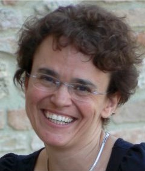
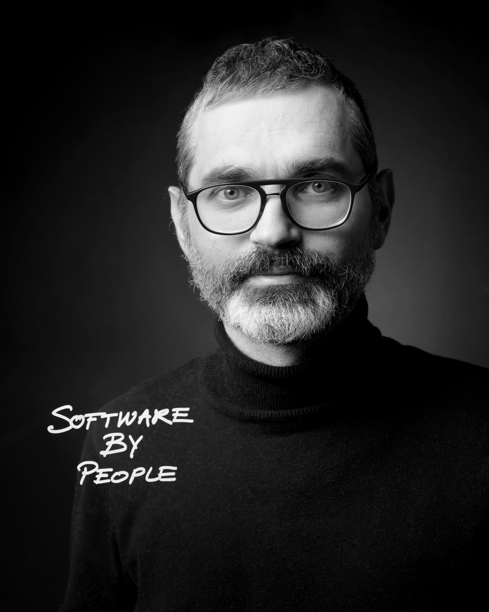

KEYNOTE SPEAKERS
Prof. Dr. Raffaela Mirandola (Politecnico di Milano, Italy)

Title:
Challenges in Engineering Antifragile Systems of Systems
Abstract:
Contemporary systems of systems are often challenged by unexpected disruptive events, which are frequently difficult to predict. Antifragile systems can withstand and benefit from outlier events, whereas fragile and robust systems cannot. However, while engineering robust systems has been the subject of research in the past, designing systems that are expected to cope with severe disruptions, and survive or even thrive in a context of volatility and uncertainty opens the stage to several challenges. In this talk, while discussing the challenges that must be addressed to attain the systematic development of antifragile systems of systems, we support the vision that an effective application of the antifragility principle requires a clear understanding of the implications of its adoption and its relationships with other approaches sharing a similar objective.
Short bio:
Raffaela Mirandola is Full Professor in the Dipartimento di Elettronica, Informazione e Bioingegneria at Politecnico di Milano. Raffaela's research interests are in the areas of performance and reliability modelling and analysis of software systems with special emphasis on methods to develop software that is dependable and can easily evolve, possibly self-adapting its behavior. The research has been funded by several national and international projects. She is an active member of the scientific community and she regularly serves on international program committees and as a referee for top-ranked journals. She also organized several international conferences and workshops as Program Chair or General Chair and she is Special Issue co-Editor for the Journal of System and Software, Elsevier.
Prof. Dr. Alexander Serebrenik (Eindhoven University of Technology, The Netherlands)

Photo by: Marike van Pagee
Title:
Emotion Analysis in Software Ecosystems
Abstract:
Software developers are known to experience a wide range of emotions while performing development tasks. Emotions expressed in developer communication might reflect openness of the ecosystem to newcomers, presence of conflicts, problems in the software development process or source code itself. In this talk, based on a recent work with Nicole Novielli, I present an overview of the state-of-the-art research on analysis of emotions in software engineering focusing on the studies of emotion in context of software ecosystems. To encourage further applications of emotion analysis in the industry and research we also discuss currently available emotion analysis tools and datasets as well as outline directions for future research.
Short bio:
Alexander Serebrenik is a full professor of social software engineering at the Eindhoven University of Technology, The Netherlands. His research goal is to facilitate evolution of software by taking into account social aspects of software development. His work tends to involve theories and methods both from within computer science (e.g., theory of socio-technical coordination; methods from natural language processing, machine learning) and from outside of computer science (e.g., organisational psychology). The underlying idea of his work is that of empiricism, i.e., that addressing software engineering challenges should be grounded in observation and experimentation, and requires a combination of the social and the technical perspectives. Alexander has co-authored a book “Evolving Software Systems” (Springer Verlag, 2014), and more than 170 scientific papers and articles. He is actively involved in organisation of scientific conferences and is member of the editorial board of several journals. He has won multiple best paper and distinguished reviewer awards. Alexander is a senior member of IEEE and a member of ACM. Contact him at a.serebrenik@tue.nl.